Upto the 1980s Gurgaon was just a small collection of villages. That is
when the Maruti Suzuki plant was set up in Gurgaon. Also a lot of trade rules
were changed in 1991. Both these things lead to huge development. With the Suzuki
plant, many companies that made parts(outsourced by Suzuki) started setting up
plants. Employees started comming in residential space was set up and stuff was made. When
after 1991 MNCs started comming into India outsourcing work, then they looked for
options other than Delhi as it was too expensive. Gurgaon being 15 miles from
Delhi was the perfect option. As Gurgaon was under state control as it did
not have a local government, therefore almost all private projects were
approved in a matter of days without any centralised planning. This lead to mindless
urbanisation covering almost the whole city in roads and buildings with huge populations.
Seriously idr where but I read that the pop grew 17 times in 25 years. The
main reason for this mess of a city is unplanned urbanisation.Health Facilities
There are very less public services available in Gurgaon. This would include
public transport(that forces everyone to drive cars or uber, which rarely
are electric in India), public healthcare facilities(that forces
the people to go to expensive private hospitals that are good but sometimes
even tough for the rich to afford).
Pollution-free environment
Gurgaon is polluted as hell with it WINNING the title of THE most polluted city
in the world according to data released by IQ Air Visual and
Greenpeace. I myself have seen AQIs over 800 where the
air is just smoke. The level of other types of pollution are high too check
the link given.(https://www.numbeo.com/pollution/in/Gurgaon).
Renewable sources of energy
Gurgaon is a part of Haryana. Haryana has mainly 6(now 5 cause after the Panipat thermal
powerplant was closed) sources of electricity. 5(4) of these are
thermal powerplants and only one hydroelectricity power station
with low(many folds than the other 4 sources of electricity) power
generation. Though they are now adopting solar power as an alternative,
commercially it is still mostly powered on conventional sources of energy.
Resource efficiency
In a survey conducted last year, the richest city in Haryana(which without a
doubt is Gurgaon) had a very poor performance with almost all of its
600-tonne waste produced daily almost all of which goes untreated and the
sewage system has already been talked of above. Talking of circular economy and
resource efficiency in Gurgaon is something for which I couldn’t even find
an analogy for.
Public awareness
Public of this city know about pollution and how harmful it is but remains
blissfully unaware of the environmental state of their very own city. Before
I started researching for this, I was unaware of the fact that I was producing
sewage that ends up in rivers and use electricity that nither comes from
the central power line nor is renewable. The city is too beautifully covered
up by luxuries that come on the cost of the environment that people are unaware
of. I spent hours on official sites trying to find out where our waste
goes, where our electricity comes from etc.. but the information is either
not public or too deeply hidden to be easily found.
Land use management and Biodiversity protection
The land of Gurgaon is impossibly chaotic. The city was built without
any planning with roads coming out of nowhere and huge farm
estates being covered with skyscrapers cause private builders could
afford to buy it in millions… I have myself seen the place I live in
as a farmland with my very eyes as a 3-year-old yet it stands now with
skyscrapers. The only places which are not covered in this absolute
monstrosity is the botanical garden of Gurgaon or its DLF golf club, parts of the Aravali
and some outer areas of the city(seriously look at the map of the city).
SHockingly Gurgaon is the state’s district that has the highest percentage(17%)
of the total forest cover in the entire state(unsurprisingly, only a number
just over 3% of the total land of the state accounts as forest cover).
This forest region mainly the Aravali region which has seen a huge loss in
biodiversity in recent years. Thankfully the authorities now are in the
right state of mind and have started town planning(https://www.gmda.gov.
in/works/urban-planning.html?language=en) but the protected biodiversity region
is apparently still quite low (in the plan) which is a problem.
Clean food and water
Most of the water supplied in Gurgaon is not very clean(well u can call
it kinda clean cause at least it is still transparent, but its hard water)
. Though it is affordable and most accessible to the public
, it’s not something that the city has a local source due to the lack of water bodies
in the city meaning that almost all the cities water has been
obtained from sources outside the city. Unlike in many places, Gurgaon
is a place where drinking water from the tap is unheard from( I was shocked when
I heard that people do it). As for food, the farmlands of the city have shrunk to
sizes incapable of serving the increasing the population which
too is supplied neighbouring regions but is somewhat of good quality and
affordable.There was no proper sewage treatment in Gurgaon as recent as 2012(though
now a huge part of the sewage is treated) and 2-thirds of the city’s sewage
was dumped untreated into rivers (https://ideas.ted.com/skyscrapers
-but-no-sewage-system-meet-a-city-run-by-private-industry/).The drainage system absolutely
sucks with little rains turning roads to rivers where boat wold work
better than cars!
Policies
Though the environmental policy of the state(https://tcpharyana.gov.in/ncrpb/
FINAL%20SRP%20FOR%20WEB-HOSTING/14_Environment.pdf) which Gurgaon falls in,
aims at the protection of forests and rivers along with clean water and air. The
proper implementation of these is yet to bee seen. The environmental policy aims
towards improvement in areas that the city majorly lacks in and is possibly
the only hope to clear this absolute mess that has been seen.
GURUGRAM
CHANDIGARH
The sustainable development proposal contained 17 goals with 169 targets covering a broad range of sustainable development issues. These included ending poverty and hunger, improving health and education, making cities more sustainable, combating climate change, and protecting oceans and forests. According to these 169 targets I would like to talk about the policies/schemes/initiatives Chandigarh has taken up to achieve the following:
1. No poverty: implementation of the food security act has been successful in Chandigarh by having an effect on over about 64623 people. The old age pensions,widow pensions and disabled pensions have helped a total of 20148 people in total. More than 12,000 families living in slum areas have already been shifted in flats built under JNNURN. Moreover, 4,960 flats have been constructed and families living in slum colonies will be shifted.
2. Zero hunger: AAY is an imitative of Red Cross Society (with initial financial support from HPCL under CSR initiative) to provide affordable food at Rs. 10. everyday around 3,500 to 4,000 packets are prepared under this initiative. Chandigarh Administration implemented the public distribution system by replacing Fair Price Shops with food subsidy.
3. Good health and well being: Chandigarh awarded with Certificate of Merit by Ministry of Health & Family Welfare for Maximum improvement in Infant Mortality Rate during the period 2015 -2016. • New hospitals are being constructed with infrastructure being upgraded in existing hospitals to improve medical facilities and Chandigarh Administration is planning a new sports injury centre having provisions like MRI, CT scan, X-ray, Ultrasound etc.
4. Quality Education: In Education Sector, Chandigarh Administration is planning to set up two more colleges along with increasing the number of seats in several existing colleges and have built 200 Smart Classrooms in 9 Government Schools while another 200 Smart Classrooms are due for completion to impart education to students through multimedia projectors. Chandigarh Administration launched a mobile educational/rehabilitation unit for children with special needs.
5. Reduced inequalities: To ensure safety and security of Women, Chandigarh has started a facility to make available police car to pick and drop women from any location in Chandigarh after 10:00 PM.
6. Sustainable cities and communities: Chandigarh is declared ODF city with 894 public toilets.100% habitation covered with drinking water supply.Chandigarh has been also declared as a Kerosene Free City and 2,48,049 bbeneficiaries are receiving LPG subsidy under PAHAL.
7. Solar Installed Capacity - Chandigarh has an installed capacity of grid connected rooftop and decentralized solar plants of 24.9 MW. It is planned to increase this installed capacity to 37MW and 69MW by 2010 and 2022 respectively.•
8. Green Cover - Green cover in Chandigarh is 41.1%. Efforts are being undertaken to increase this area further. Cycle Tracks - Under the Smart City Project, Chandigarh Administration has built 96 Kms of Cycle Track and another 70 Kms is to be completed in the next phase.
EDUCATION
Education for sustainable development (ESD) promotes the development of the knowledge, skills, understanding, values and actions required to create a sustainable world, which ensures environmental protection and conservation, promotes social equity and encourages economic sustainability. The education provided in Chandigarh is of international standards. The institutes here never compromise on the quality of education. Day by day more schools are coming up as an initiative of the Chandigarh government to supplement further growth in the education sector. They aim to educate every child living in the city and specially reach to the students staying in remote areas.With state of the art facilities, the schools, colleges and universities in Chandigarh provide quality education, which is talked about in the country. Schools educate kids from nursery till higher secondary. Colleges on the other hand, provide conventional or professional courses. There are institutes in Chandigarh that specialize in distance program. The city also has institutes offering vocational courses such as those in animation, computer programming, and graphic designing. To make my material more interesting and informative I will incorporate case study of my own school (Vivek High School, Chandigarh) and a case study of Panjab University Chandigarh to provide you an insight to Chandigarh's curriculum and it's vision.
Primary Education:
Chandigarh boasts of different kinds of schools. About 105 of these are funded by the government while many others are private. The schools in Chandigarh are well equipped with laboratories, libraries and computer centers. English is generally used as a medium of education though some use the local language and Hindi too. Subjects taught in schools include mathematics, science, Hindi, English, regional language and social sciences. Different boards like CBSE, ICSE and State Board schools are functional in the city. Apart from the public schools, the city also boasts of several residential institutions. These occupy particular residential area and attract pupils and teachers from the vicinity.There are a total of 115 government schools in Chandigarh (Primary-8, Middle-13, High School-53, Senior Secondary-40), seven aided schools, 37 recognized Senior Secondary private schools, 19 recognized private High Schools, 13 recognized private Middle Schools, 6 recognized private primary schools, and 3 recognized private play schools.
Colleges in Chandigarh:
Colleges in Chandigarh provide education to resident students as well as those from all over the country. From Bachelors to Masters, all kinds of professional courses are provided by these educational institutions. There are both Government and private owned colleges. Courses offered by these include streams like biotechnology, business administration, information technology, commerce, arts and humanities, fashion and technology and science. The colleges are divided according to the courses they offer such as Law, Ayurvedic, Nursing, Pharmacy, Engineering, Medical and Nursing.
Universities in Chandigarh
In Chandigarh there is one state university, one private university and one deemed university. Panjab University,Post Graduate Institute of Medical Sciences and Punjab Engineering College.
Case Study Of Vivek High School:
Vivek High School endeavours to create a community of 21st Century Learners through a nurturing, stimulating and holistic learning environment, where students are encouraged to develop open mindedness, a spirit of inquiry, creative and critical thinking skills, self and social responsibility.Besides Teaching, Reading, Writing and Arithmetic, we focus on RELATING that is to develop in our children a love and interest for learning, a healthy curiosity, love of books, correct study habits and to instill in them an understanding and appreciation of the beauty in Art, Literature, Human Relationships and Moral Values. School guides the children to face a changing, tougher world, and aim to produce good, happy, healthy, well adjusted, morally sound children. Special care is taken to inculcate discipline so that it becomes a child's way of life. School also develop in the child the cultural ethos of our country. Specialised instruction in advanced subjects is given to the students by experienced and qualified teaching faculty. The school collaborates with the community to instil in the students, generosity of spirit and integrity in thought, word and action At Vivek to be truly educated is to have a deeper understanding of ourselves and of the world around themselves.The aims and ideals of Vivek High School are to provide education for boys and girls from Classes Nursery to XII as per the Central Board of Secondary Education (CBSE), New Delhi.The entire curriculum of Vivek High reflects its philosophy and ethos. The accent is on the improvement and not only the achievement of set standards. The various activities in the school encourage an all-round development of traits, which would stand the students in good stead in later life irrespective of whichever profession they choose.
Case study of Panjab university
Panjab University is located in Sector 14 and Sector 25 of Chandigarh, spreading across an area of almost 550 acres.The layout of two campuses of the University has been conceived to meet the academic, administrative, sports/recreational, residential and other requirements of a growing University. To make it self-contained, infrastructural facilities like its own Shopping Centre, Health Centre, Bank, Post office, Swimming Pool, Gymnasium, Sports Grounds, Botanical Gardens, well maintained parks, Open Air Theatre, Guest Houses, Faculty House, Seminar Complexes, Alumni House, Community Centre and a school, have been provided. Besides these facilities, the University Campus has 8 hostels for boys, 9 hostels for girls, a Working Women Hostel and 2 sports hostels.The academic institutes on the campus and four Regional Centres are grouped under the Faculties of Arts, Science, Languages, Law, Education and Fine Arts, Business Management and Commerce, Engineering and Technology, Medical Sciences, Pharmaceutical Sciences and Dairying, Animal Husbandry and Agriculture. Most of the departments have their own specialized libraries, and the working period runs for at least 180 days in a year.The University School of Open Learning, a multi-disciplinary department, caters to more than 25000 distance learners and offers over 20 traditional and job oriented courses.
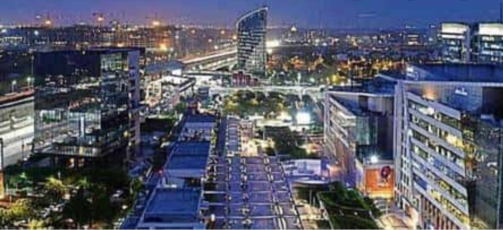
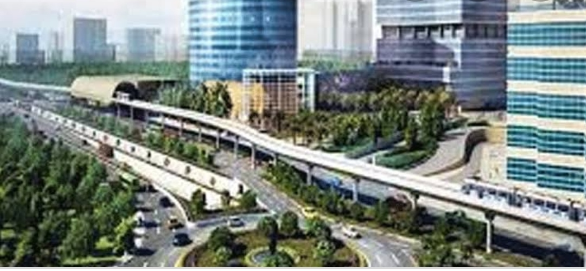
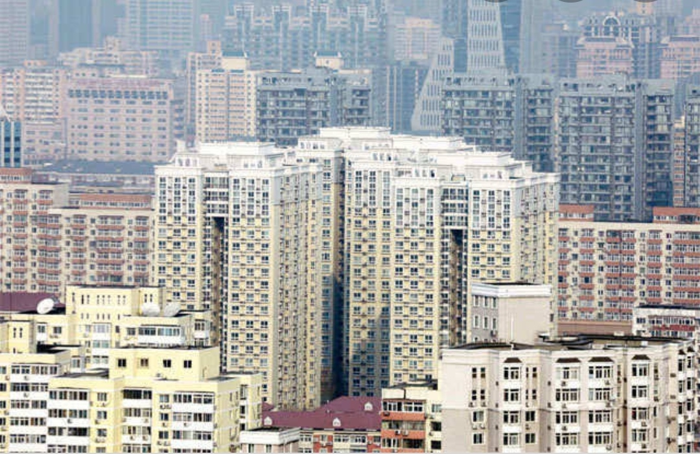
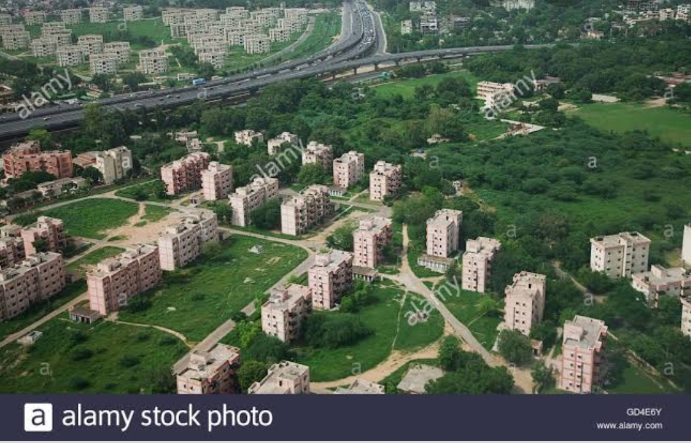
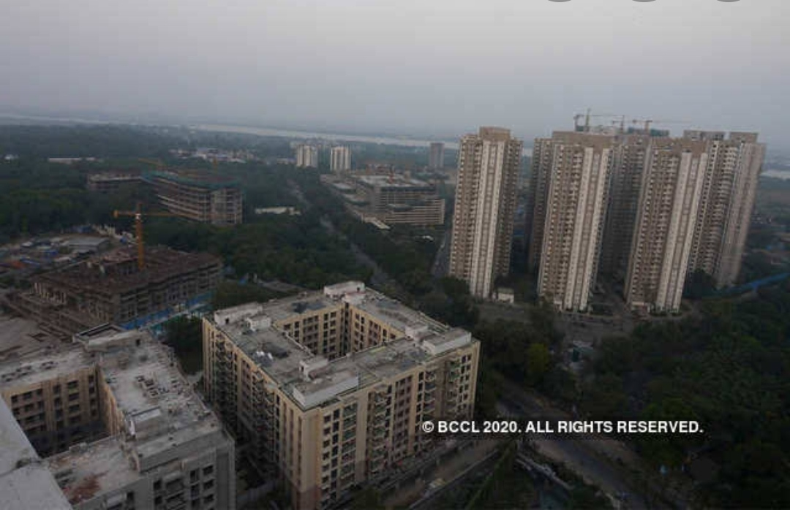
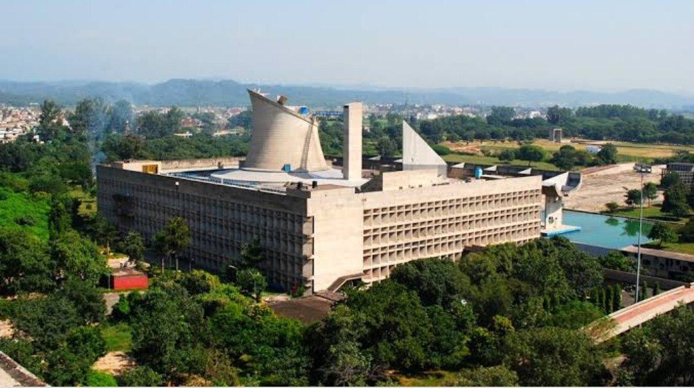
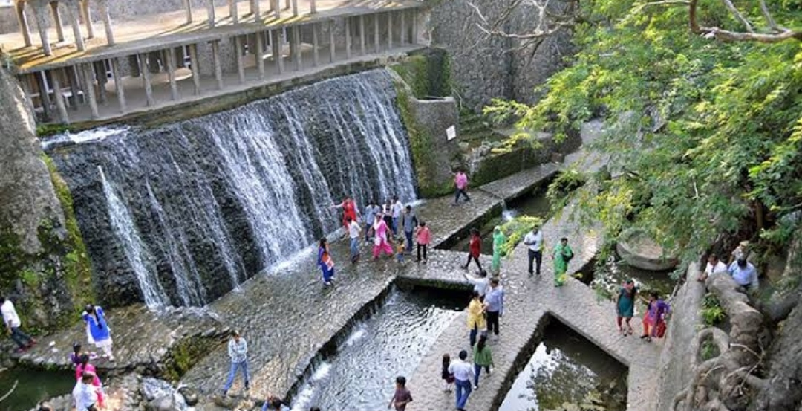
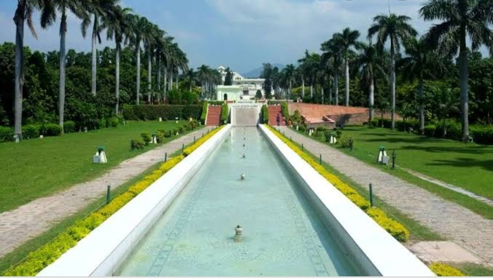
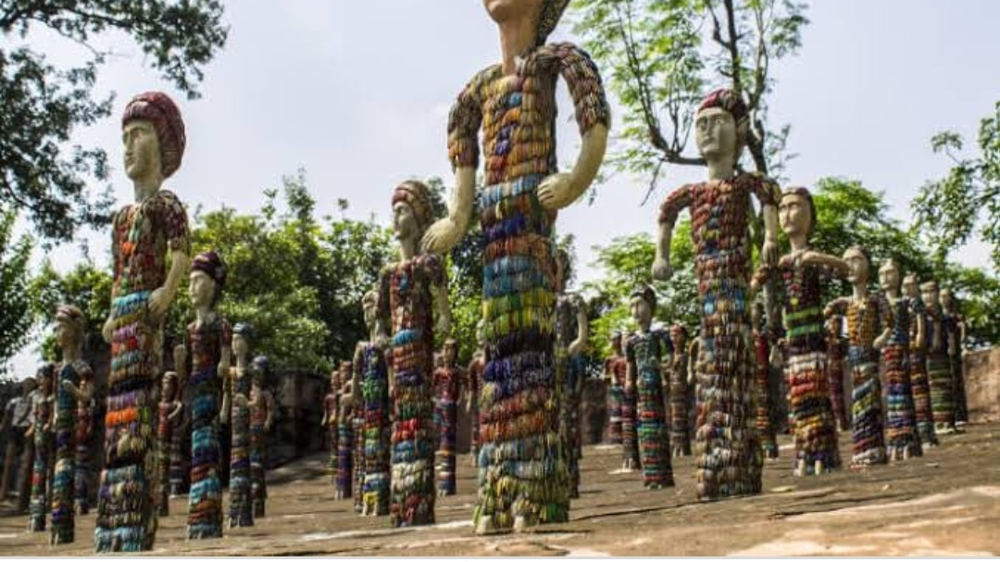
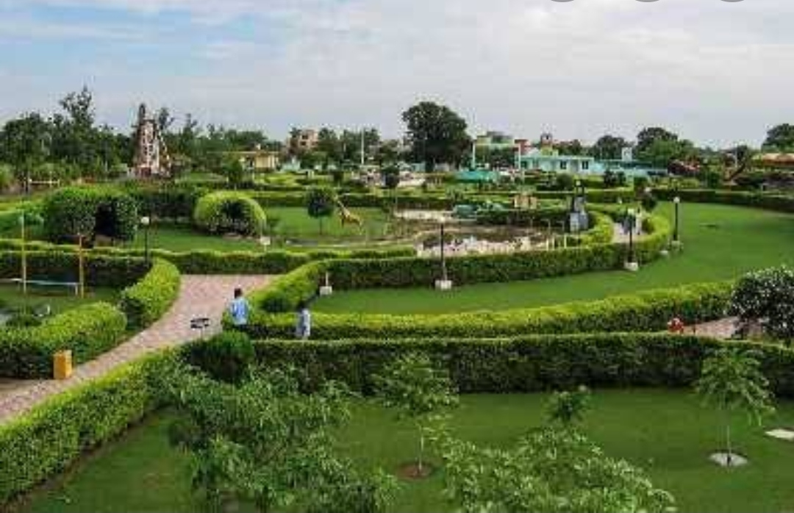
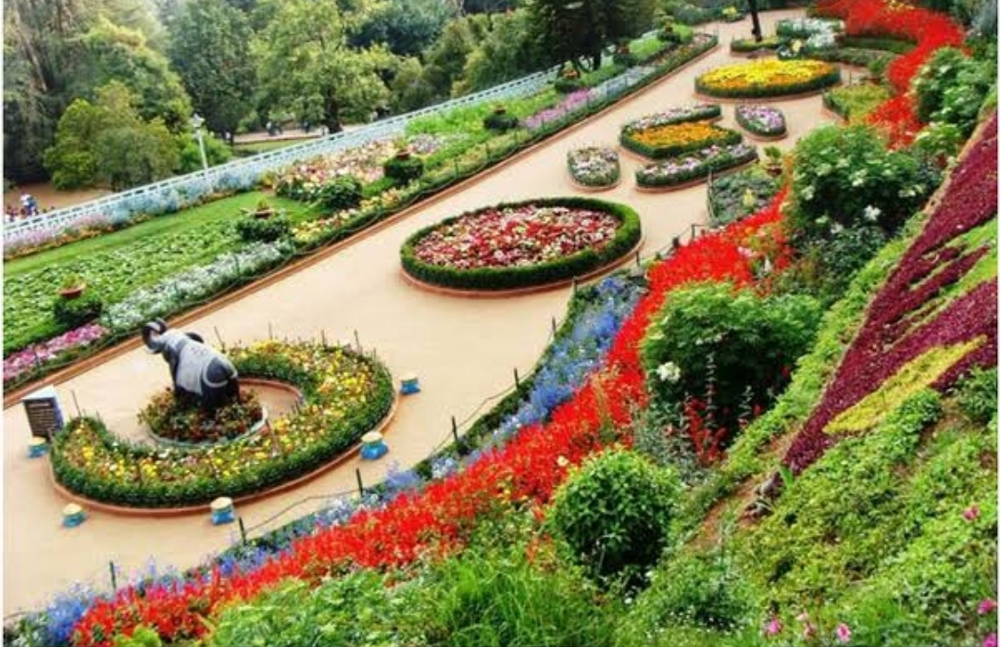